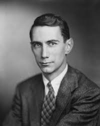

Claude Shannon

Claude Shannon, in full Claude Elwood Shannon, American mathematician and electrical engineer who laid the theoretical foundations for digital circuits and information theory, a mathematical communication model.
The son of a teacher and an entrepreneur, Claude Elwood Shannon relayed his first bits of information as a crying baby on April 30, 1916, in the small town of Petoskey, Michigan. He went to both primary and secondary school in the nearby city of Gaylord and then attended the University of Michigan, where he completed two bachelor’s degrees in mathematics and electrical engineering.
In 1941, Shannon was hired by the mathematics department at Bell Labs, where he’d done his summer internship a few years prior. He would end up working there for 15 years and remained affiliated with Bell Labs for 31 years.A few years after joining Bell Labs, as the war wound down, Shannon published the paper that would change the world. Titled “A Mathematical Theory of Communication,” it revealed that any kind of communication could be boiled down and transmitted via any digital medium using a basic binary digit system of 1s and 0s. This made popular the computer language of bits used by all digital systems in the modern world.
Besides his serious research and important contributions, Shannon also loved to play. During his final years working at Bell Labs, he channeled his attention into creating a menagerie of mechanical toys. These included an automatic Rubik’s Cube solver, a juggling machine, a rocket-powered Frisbee and a motorized Pogo stick.
He also worked on a plethora of clever devices that seemed like they could almost think for themselves. These were early precursors to today’s machine learning behemoths, including a computer-based chess engine, a mind-reading device and a robotic mouse capable of learning to solve a maze. In 1956, Shannon accepted a position at MIT as a visiting professor. He would spend his later decades working in MIT’s Research Laboratory of Electronics. Two years later, he moved in, becoming a permanent faculty member. In 1978, he was awarded the status of professor emeritus.In the last half of his life, Shannon became fascinated with artificial intelligence. He made a couple of important contributions to the field, including designing a few machines that could learn and react to their environment.
In 1950, he designed an electronic mouse that he programed to solve mazes. The mouse was a magnetic creature with a control module made from a relay circuit. He named it Theseus.
Shannon created a system of mazes for his mouse that he could modify at will. He designed the mouse’s relay circuit brain to travel through the corridors of his mazes until it discovered the exit.
Once a given maze had been plotted, he could put the mouse in any location it had been before, and it would use its prior experience to immediately plot a path to the exit. If he put it in a location it hadn’t visited, it would continue its search for the exit and add the new pathways to its memory banks in an early form of machine learning. Theseus was one of the first human-made learning devices.
That same year, Shannon wrote a trailblazing paper titled “Programming a Computer for Playing Chess.” It laid the foundations for the first full human versus computer chess game played in 1956 by the Los Alamos MANIAC machine.
The paper estimated that the number of possible chess games was somewhere around 10 to the 120th power, a number larger than the amount of atoms in our universe. This idea, now known as “Shannon’s Number,” implied that a brute-force algorithm wouldn’t be a plausible way of teaching a computer to play chess.
Shannon argued that a strategic algorithm that only considered the best moves in a given position would be the only workable solution. This idea is similar to the way human chess players think. It subsequently formed the basis of the most successful machine learning chess engines still used today.